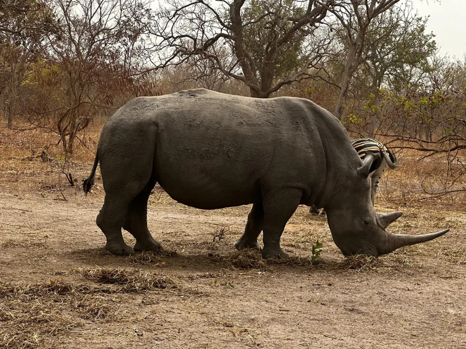
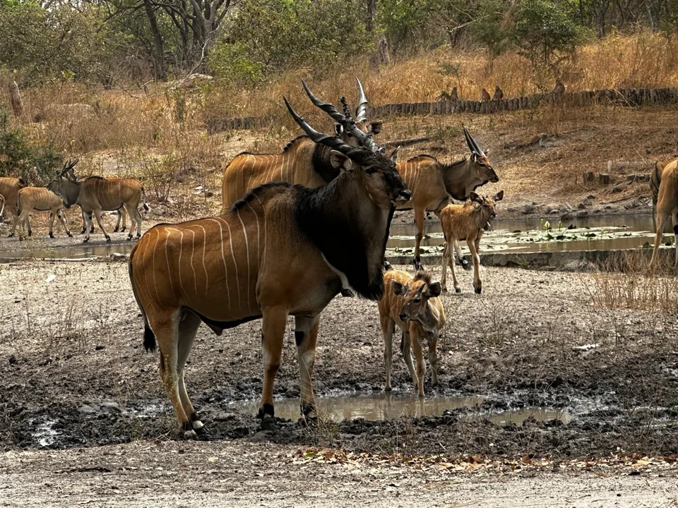

Arrival transfer and private route briefing
Meet your guide, transfer to the coast and review the route, pace and practical border details.
Airport or hotel pickup included.
7 days / 6 nights / from $1,280 per person
A richer private cross-border route for travelers who want Gambia highlights plus Senegal nature, village culture, river landscapes and a stronger sense of the Senegambia region.
This private itinerary combines the Gambian coast, Kotu wetlands, Bakau, Banjul, ferry or north bank logistics, Senegal nature or wildlife stops, village culture, crafts and river or mangrove landscapes.
The package includes private guide/driver, vehicle, fuel, accommodation, airport transfers, border assistance, listed visits and route planning. International flights, meals, drinks, personal expenses, insurance and tips are not included unless confirmed in your quote.




The exact routing is confirmed around dates, border timing, reserve availability and group pace.
Meet your guide, transfer to the coast and review the route, pace and practical border details.
Airport or hotel pickup included.Explore accessible nature and coastal culture with time for birdlife, local markets and a sunset stop.
Gentle nature and culture day.Visit Banjul, handle ferry or north bank logistics and continue toward the Senegal route.
Logistics are managed by your guide.Spend the day around a Senegal nature or wildlife stop with flexible time for photos and observation.
Reserve choice depends on final routing.Explore Senegal village culture, crafts and river or mangrove landscapes at a private pace.
Local culture and landscape focus.Return with stops for local life, viewpoints, shopping or photography depending on the day.
Flexible return day.Enjoy a calm final morning, custom stop if time allows and airport or hotel transfer.
Timing depends on your onward plans.The final quote depends on dates, hotel level, rooms and group size.
6 nights arranged along the route, confirmed before booking.
Vehicle, fuel, driver/guide support, airport transfers and border logistics.
Kotu wetlands, Senegal nature or wildlife stops and river landscapes.
English-speaking guide as standard, Polish-speaking guide on request.
We will reply from info@gambiantour.com with availability and a final quote.